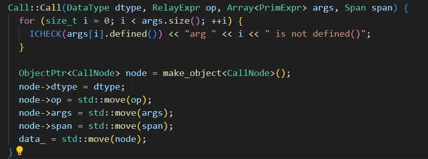

# 前言
本系列文章将从代码和流程图入手，详细介绍 TVM AI 编译器的编译流程。本文章为第一篇，取名为 “必要知识”，约等于 “大杂烩”。食之无味，弃之可惜。但基于我个人的主观喜好和偏见，这些知识值得在整个代码讲解之前声明。
作为初学者，错误在所难免，还望不吝赐教。
# 工程结构
TVM 主要由 C++ 语言和 Python 语言实现。
-
a.TVM C++ 后端核心代码 位于 /home/user/tvm/src
C++ 后端核心代码的功能是生成 libtvm.so libtvm_runtime.so，分别是模型编译过程中的需要的 libtvm.so 库，和模型部署运行时需要的 libtvm_runtime.so 库。对应的头文件位于 /home/user/tvm/include.- 1. 其中 src/runtime 是模型部署相关 CPP 文件
- src/runtime/graph_executor 最基本的图执行器
- src/runtime/module.cpp 运行时 Module 基类
- src/runtime/contrib BYOC 第三方设备运行及实现 包括 dnnl cblas cudnn ethosu 等等
- srd/runtime/cuda CUDA 运行时 Module
- 还有其他设备的运行时 Module 如 opencl hexagon metal 等，以及一些接口文件
- 2.src/relay 是 TVM 高级中间表示 IR 的相关 CPP 文件
- 3.src/relax TVM 正在发展的高级中间表示 IR，功能上等同于 Relay
- 4.src/te TVM 的 TE 表达式
- 5.src/topi 算子的计算定义和后端调度
- 6.src/tir TVM 低级中介表示 IR，接近于硬件表示
- 7.src/auto_shedule TVM 自动优化调度相关
- 1. 其中 src/runtime 是模型部署相关 CPP 文件
-
b. TVM Python 前端代码 位于 /home/user/tvm/python
Python 前端代码为 C++ API 和执行编译的驱动代码，提供 Python 绑定。
表面上看 TVM 工程应当是 Python 前端调用 C++ 后端生成的 libtvm.so libtvm_runtime.so ，实际上 TVM 支持 Python 和 C++ 的相互调用。例如一些算子的 compute 计算公式和 schedule 调度位于 Python 代码中，由 C++ 进行调用。
在编译阶段，开发者编写 Python 代码，调用 TVM Python 前端，而 TVM 的 Python 前端又依赖于 C++ 后端生成的 libtvm.so libtvm_runtime.so 动态库。
部署运行阶段即可以编写 Python 来执行，也可以直接编译 C++ 为可执行文件，参考 TVM C++ 部署
# 编译
编译过程可以参考 TVM 英文文档和中文文档。文档中内容全面，这里只摘必要步骤，是最简单的部署安装方式。
1. 编译 libtvm.so libtvm_runtime.so
mkdir build # 下载工程后进入工程目录 创新文件夹 | |
cp cmake/config.cmake ./build | |
# 将 cmake 配置文件拷贝到 build 目录，可以更改需要的额配置选项 | |
cd build | |
cmake .. | |
make -j32 |
2. 配置临时运行环境
个人喜欢用临时环境运行项目，可以避免 .bashrc 文件中添加过多环境路径；特别是开发人员有多个 TVM 项目的时候，可以避免项目的混淆。
# 指定 tvm 库路径 | |
export PATH=/home/user/tvm/build:$PATH | |
# 指定 tvm Python 路径 | |
export PYTHONPATH=/home/user/tvm/python:${PYTHONPATH} | |
# 运行 | |
python3 ***.py |
# TVM 基类
大概从事工程项目开发的人员对 Object, ObjectPtr, ObjectRef 等写法相对熟悉，但是没有相关经验的算法研究人员，还是先认识一下 TVM 中的这三个基类。
TVM 中大部分类都继承自三大基础类 Object, ObjectPtr, ObjectRef。想多了解一下的话，可以学习博客 TVM: Object, ObjectPtr, ObjectRef (以 tir.sch 为例) 。
可能比较粗显的总结一下：TVM 中以 "Node" 结尾的类是 Object 的派生类，去掉 "Node" 的类是 ObjectRef 的派生类，Object 的派生类负责 "做事"，ObjectRef 的派生类方便程序员引用，ObjectPtr 是桥梁。但总之这三者是一个东西（刚学时我就被这搞晕了：( ）。
举例说明如何使用 TVM 的三大基础类构造对象:
class Anode: public tvm::runtime::Object{ | |
public: | |
Anode(){}; | |
~Anode(){}; | |
std::string a(){return "instance";} | |
}; | |
class A: public tvm::runtime::ObjectRef{ | |
public: | |
TVM_DEFINE_MUTABLE_OBJECT_REF_METHODS(A, tvm::runtime::ObjectRef, Anode); | |
}; | |
int main(){ | |
tvm::runtime::ObjectPtr<Anode> n = tvm::runtime::make_object<Anode>(); // 桥梁 Ptr = make_object (本体 node) | |
A ref(std::move(n)); // 指针 | |
ref->a(); // Anode 指针，可以引用 a () | |
//ref.get ()->a (); // 基类 Object 指针，error Object has no member a () | |
} |

可以再看一下 TVM 工程中的例子，这段代码创建了本体 CallNode ，通过 make_object 生成桥梁 ObjectPtr<CallNode> ，最后赋值给指针 Call 的 data_ 字段。
# Python 和 C++ 相互调用
TVM 实现了 FFI (Foreign Function Interface) 机制，目标是使得任意语言下定义的函数都可以被任意其他语言调用。
宏 TVM_REGISTER_GLOBAL
/*! | |
* \brief Register a function globally. | |
* \code | |
* TVM_REGISTER_GLOBAL("MyPrint") | |
* .set_body([](TVMArgs args, TVMRetValue* rv) { | |
* }); | |
* \endcode | |
*/ | |
#define TVM_REGISTER_GLOBAL(OpName) \ | |
TVM_STR_CONCAT(TVM_FUNC_REG_VAR_DEF, __COUNTER__) = ::tvm::runtime::Registry::Register(OpName) |
在 C++ 后端同过 “TVM_REGISTER_GLOBAL” 这个宏将函数注册为全局函数，该全局函数的类型为 PackedFunc。
TVM_REGISTER_GLOBAL("tvm.graph_executor_factory.create") // 注册为全局函数 PackedFunc | |
.set_body([](TVMArgs args, TVMRetValue* rv) { | |
*rv = Module(exec); | |
}); |
在 Python 前端可以通过 get_global_func () 函数来获取全局函数 PackedFunc 并执行
fcreate = get_global_func("tvm.graph_executor_facttory.create") | |
self.module = fcreate(graph_json_str, libmod, libmod_name, *args) |
在 C++ 端也可以通过名字获取 全局函数 PackedFunc
PackedFunc pf = it.GetFunction(name) |
python 端有大量如下类似代码，将有相同后缀的 PackedFunc 注册到 Python 端
"""FFI APIs for tvm.ir""" | |
import tvm._ffi | |
tvm._ffi._init_api("ir", __name__) |
Python 端获取并执行 PackedFunc
_ffi_api.Module_UpdateGlobalInfo(self, name, global_info) |
# 后记
本博客目前以及可预期的将来都不会支持评论功能。各位大侠如若有指教和问题，可以在我的 github 项目 或随便一个项目下提出 issue，或者知乎 私信，并指明哪一篇博客，我看到一定及时回复，感激不尽！